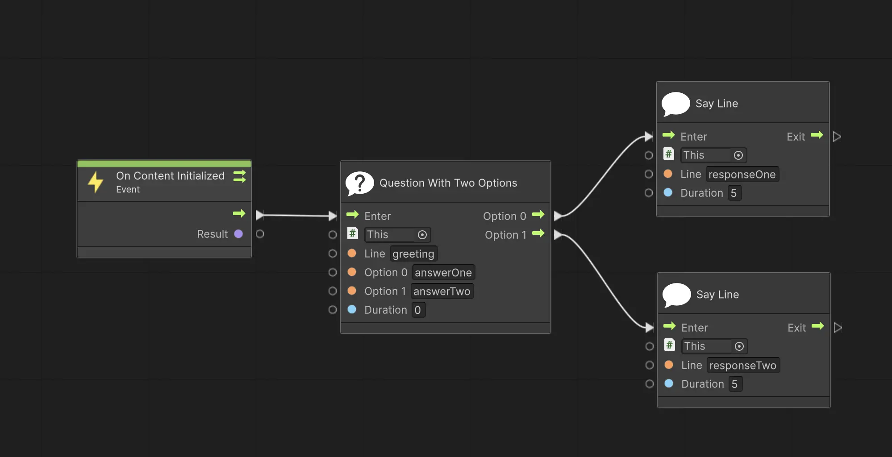
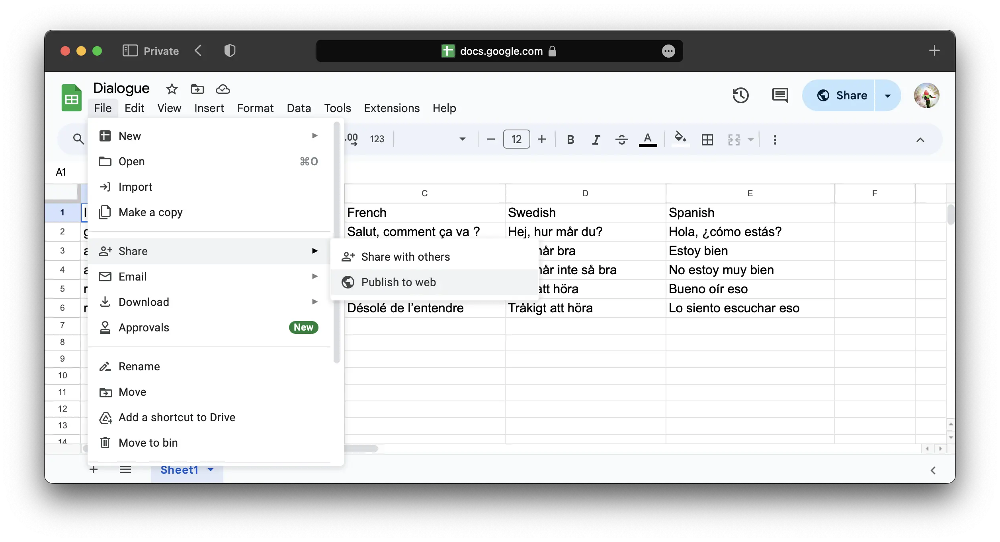
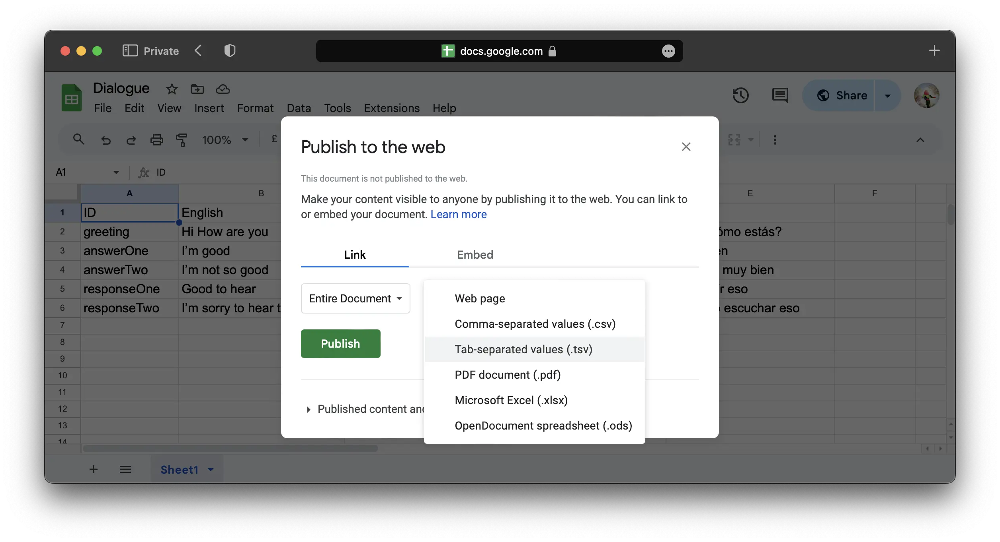
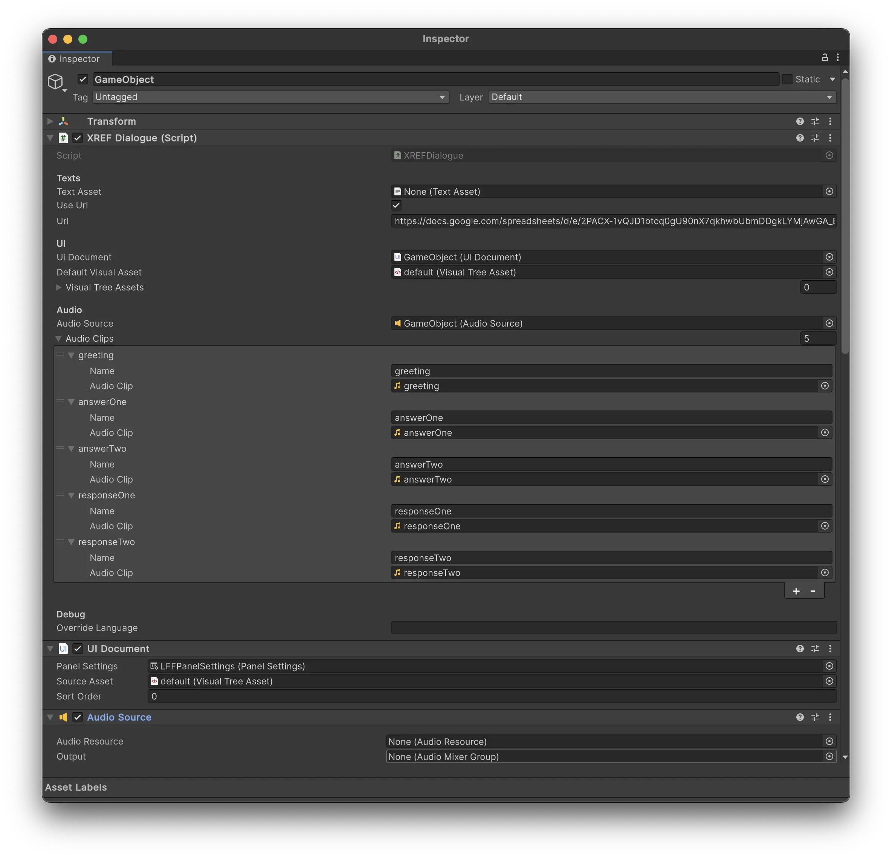

XREF Dialogue System
The Dialogue System is a tool for creating interactive conversations in your Meadow experiences. It allows you to create branching dialogues with multiple choices and responses, and create your own RPGs.
Your dialogue tree is constructed from a .tsv sheet with a list of lines of dialogue, each with a unique ID. You can add as many languages as you want, the system will automatically detect the system language and use the correct one. If the system language can’t be found, it will default to english.
Dialogue System Properties:
Texts
- Text Asset:
TextAsset- ATextAssetwith a.tsvfile that contains the dialogue. - Use URL:
bool- If true, the dialogue will be fetched from a URL. - URL:
string- The URL to fetch the dialogue from. Needs to be a publicly available csv file. See section “Use the Dialogue System with a URL” for more information.
UI
- UIDocument:
UIDocument- The UI that will be used to display the dialogue. - Default Visual Asset
VisualAsset- The visual asset that will be used to display the dialogue. Leave empty to use the visual asset referenced in theUIDocument. - Visual Tree Assets
List<VisualAsset>- A list of visual assets that can be used to display the dialogue, if you want to use different ones for different sections. You can switch between these in the visual scripting.
Audio
- Audio Source:
AudioSource- The audio source that will be used to play the dialogue audio. - Audio Clips:
List<AudioClip>- A list of audio clips that will be used to play the dialogue audio, each corresponding to one line of dialogue.
Debug
- Override Language:
string- Specify which language you want to use. If left empty, the system will use the system language.

Using the Dialogue System
- Add the
XREFDialoguecomponent to any game object in your prefab. - Create a
UIDocumentand add it to theUIDocumentfield in theXREF.DialogueSystemcomponent. This is the UI that will be used to display the dialogue. It can be added to any game object. - Add a
VisualAssetto theUIDocument. You can create one yourself, or use a default one located inpackages/XREF.Experiencebuilder/Runtime/Dialogues/VisualTreeAssets/default. To create your own visual asset, see section “Create your own visual asset”. - Add a
Panel Settingsto theUIDocument. You can create one yourself, or use a default one that you find when clicking the little circle next to thePanel Settingsfield. - Add your dialogue tsv to the
TextAssetfield in theXREF.DialogueSystemcomponent. You can also use a URL to fetch the dialogue from. See section “Use the Dialogue System with a URL” for more information. - Create your dialogue tree in visual scripting. See section “Create your dialogue tree” for more information.
Create your dialogue tree
The XREF Dialogue System comes with a range of nodes for you to build dialogue trees. All nodes are found in XREF > Dialogues among the visual scripting nodes.
Here is an example of a basic dialogue tree:

In this example, the dialogue starts with a Question with Two Optionsnode, the line that is said is greeting. The two options are answerOne and answerTwo. This is displayed to the user with one line with the text in greeting and then two buttons, each with the text in answerOne and answerTwo. Depending on which of these buttons the user press, the response is either responseOne or responseTwo.
In each node you can either specify an ID that takes the line from a .tsv file, or you can specify the line directly in the node.
List of nodes:
Say Line - Prints a line to the user.
- Game Object:
GameObject- The game object with the XREFDialogue component. Usethisto reference the game object the visual scripting is on. - Line:
string- The line you want to say, or the ID of the line in the.tsvfile. - Duration:
float- The duration the line will be displayed in seconds. If 0, the line will be displayed continuously.
Question with N Options - Asks a question to the user with N options. There is currently the choice of 1, 2 or 3 options.
- Game Object:
GameObject- The game object with the XREFDialogue component. Usethisto reference the game object the visual scripting is on. - Line:
string- The line you want to say, or the ID of the line in the.tsvfile. - Options X:
string- The text of the option, can be referenced directly or through an ID in the.tsvfile. X is the number of the option. - Duration:
float- The duration before the user can press either of the buttons. - Port: Option X:
Flow- The port that will be triggered when the user presses the button for option X.
Say Line Custom Property - Prints a line to the user on a specific Label element in your visual asset.
- Game Object:
GameObject- The game object with the XREFDialogue component. Usethisto reference the game object the visual scripting is on. - Line:
string- The line you want to say, or the ID of the line in the.tsvfile. - Property:
string- The Visual Asset property you want to display the text on. - Duration:
float- The duration the line will be displayed in seconds. If 0, the line will be displayed continuously.
Set Visual Asset - Sets the visual asset used by your UIDocument.
- Game Object:
GameObject- The game object with the XREFDialogue component. Usethisto reference the game object the visual scripting is on. - Visual Asset:
VisualAsset- The visual asset you want to use. - Set Enabled:
bool- If true, the visual asset will be enabled. If false, it will be disabled.
Create a Dialogue tsv
In any text editor, create a .tsv file where the first row contains the languages you want to use. The first column should contain the ID of the line, and the following columns should contain the dialogue in the corresponding language.
Example:
| ID | English | French | Swedish | Spanish |
| greeting | Hi How are you | Salut, comment ça va ? | Hej, hur mår du? | Hola, ¿cómo estás? |
| answerOne | I’m good | Je vais bien | Jag mår bra | Estoy bien |
| answerTwo | I’m not so good | Je ne vais pas très bien | Jag mår inte så bra | No estoy muy bien |
| responseOne | Good to hear | Content de l’entendre | Gott att höra | Bueno oír eso |
| responseTwo | I’m sorry to hear that | Désolé de l’entendre | Tråkigt att höra | Lo siento escuchar eso |
You can use which languages you want. The system will automatically detect the system language and use the correct one. If the system language can’t be found, it will default to english.
It is good practice to use human readable ID’s for the lines. It will make it easier to keep track of the dialogue and you don’t need to cross reference everytime you forgot what line b1c9 was.
Please note: Unity does not recognize .tsv files as text assets by default. You need to change the file extension to e.g. .csv and then import it, to trick Unity into thinking it’s a text file. This doesn’t change the content of the file.
Use the Dialogue System with a TextAsset
- Save your
.tsvfile to disk. - Due to a limitation in Unity, you need to change the file extension to
.csvbefore importing it. This does not change the content of the file. - Import the
.csvfile to your project. Unity will display it as aTextAsset. Place it in the folder of your experience to make sure it’s included in the asset bundle. - Reference the
TextAssetin theXREF.DialogueSystemcomponent in theText Assetfield.
Use the Dialogue System with a URL
- Publish your
tsvfile to a publicly available URL. - Reference the URL in the
XREF.DialogueSystemcomponent in theURLfield. Toggle theUse URLbool to true.
This is the process for publishing your tsv if you are using Google Sheets:
- Go to
File > Share > Publish to the web. - Choose
Entire DocumentandTab-separated values (.tsv)as the format. - Press
Publish. - Copy the link and use it in the
URLfield in theXREF.DialogueSystemcomponent. - Any changes you do to the Google Sheet is automatically reflected in your experience.
 
Create your own visual asset
You can create and use your own visual asset to display the dialogue.
If you want to be able to use the Say Line you need to add a Label element to your visual asset with the name text. You can use another name, but then you need to specify the name in the Say Line Custom Property node.
If you want to be able to use the Question with N Options you need to add a Button element to your visual asset with the name optionX for each option, e.g. Option0, Option1, Option2.
You can also make a copy of the default visual asset and modify it to your liking.
Using Audio Clips
The dialogue system can play audio clips for each line of dialogue. You add audio clips to the Audio Clips list in the XREFDialogue component.
- Add an
AudioSourcesomewhere in your prefab. Reference it in theXREFDialoguecomponent in theAudio Sourcefield. TheAudioSourceis the virtual speaker in space that will play the audio clips. If your dialogue will be spoken by a virtual character, place the audio on the character’s head or mouth to make use of Unity’s spatial audio. - You don’t need to do anything with the
AudioSourcecomponent, but if you want to utilize spatial audio you need to changeSpatial Blendto 3D and set theMax Distanceto a value that makes sense in your experience, often around 5 meters to make it noticable. - Add your audio clips to the
Audio Clipslist in theXREFDialoguecomponent. - For each list item, add a
stringand anAudioClip. Thestringis the ID of the line in the.tsvfile that you want to play the audio for. This system is in place so that you may easily change audio clips during testing, without having to rename them. You do not need to have one audio clip for every line in your dialogue, only the ones with a corresponding audio clip will be played.
Please note: Meadow currently does not support separate audio clips for different languages. Let us know if you need this feature, and we’ll add it.
Example using the dialogue tree from the previous section:
